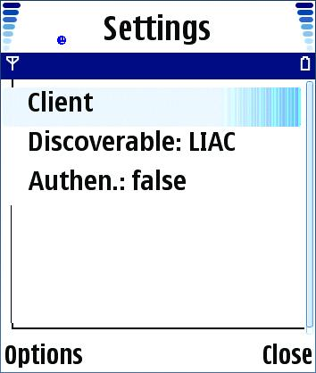
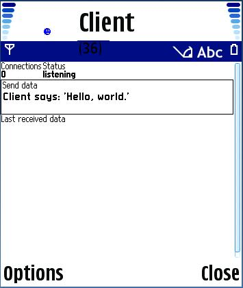
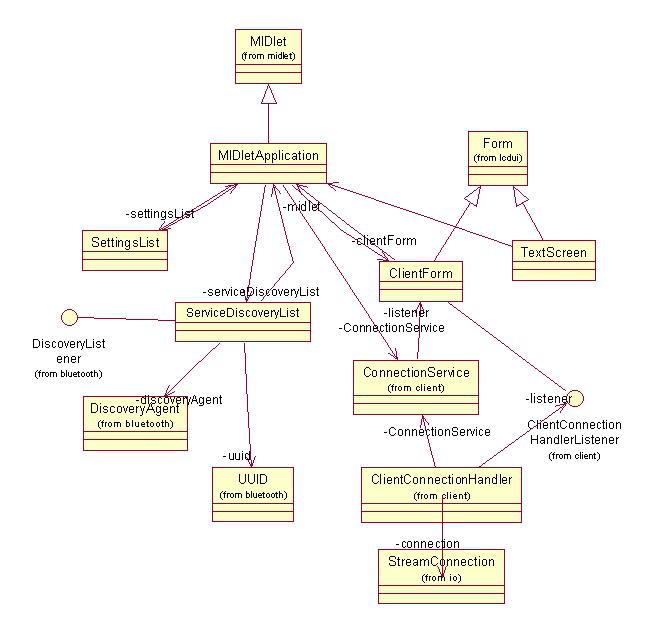

This is the client portion of the Bluetooth L2CAP example.
The example makes use of the standard MIDP application framework and LCDUI API. The reader should be familiar with these areas before attempting to understand this example.
The example is built using the standard method for building and running as described in Building and running the examples. In order to run the Bluetooth L2CAP client and server on SDK, the client midlet and server midlet need to be installed in seperate SDK on seperate desktop, and a casira-box can be used to set up the bluetooth communication in between two SDKs. The following are the instructions for configurating casira-box.
On the PC:
1) Connect it to the serial port on the PC (NOT THE USB).
2) Go into the Device Manager and select Com Ports and right click for properties.
3) Select the port speed to be 115200.
On the SDK:
4) Launch the SDK and go into preferences.
5) In Prefs, select PAN (Personal Area Network) settings tab.
6) Turn off IRDA. Turn on BT and set to BSCP and Com 1.
7) Restart the SDK.
8) Go into the SDK communication settings for BT. Give the SDK a BT name if it does not have one.
9) Choose to turn on BT and allow others to discover it.
10) Discover other devices and pair.The following classes should be included in the jar:
com.nokia.midp.examples.btl2capEcho.*
No resource files are used in this example.
When the user starts the MIDlet a the following menu screen appears.

The screen controls the client/server mode of operation, the inquiry access code setting (general or limited) and the use of authentication.
If the user selects start application then the following screen appears.

This screen displays the connection status, the send data and the last data received from the server midlet running in another instance of the phone.
A UML class diagram for the Client MIDlet is shown below.

This example illustrates the implementation of a client midlet that makes use of Bluetooth/L2CAP.